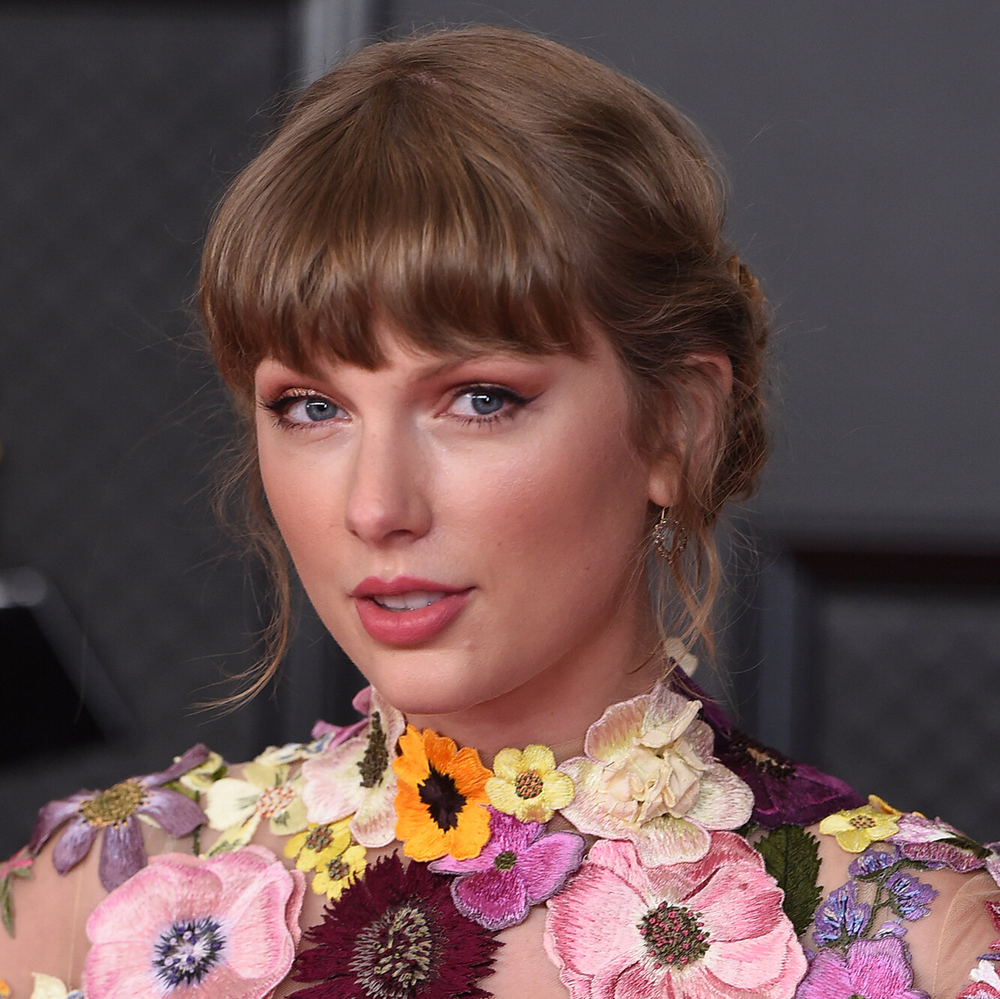

_(2021_album_cover)_by_Taylor_Swift.png)
"Fearless (Taylor's Version)" is a heartfelt homage to Taylor Swift's breakout 2008 album, reimagined with maturity and reflection.
This re-recording captures the essence of Swift's journey as an artist and woman, delving into themes of youthful innocence, first loves, heartbreak, and self-discovery.
Each track resonates with a newfound depth, showcasing Swift's growth as a songwriter and performer over the years.
With her signature blend of country and pop, she invites listeners to rediscover the magic of her early career while infusing it with the wisdom and perspective gained through experience.
"Fearless (Taylor's Version)" is not only a nostalgic trip down memory lane but also a testament to resilience and artistic autonomy.
As anticipation swirled for Taylor Swift's re-recorded album 'Fearless (Taylor's Version),' eagle-eyed fans scoured her social media and public appearances for clues, uncovering a treasure trove of Easter eggs hinting at the impending release.
Swift strategically dropped hints, from cryptic messages in her Instagram captions to subtle nods during interviews and performances.
Notably, she announced the re-recording of 'Love Story' on Good Morning America, sparking speculation about the larger project.
Additionally, Swift's meticulous attention to detail in her social media posts and music videos left fans deciphering hidden messages, song titles, and release dates, adding to the excitement surrounding the nostalgic journey of 'Fearless (Taylor's Version).
